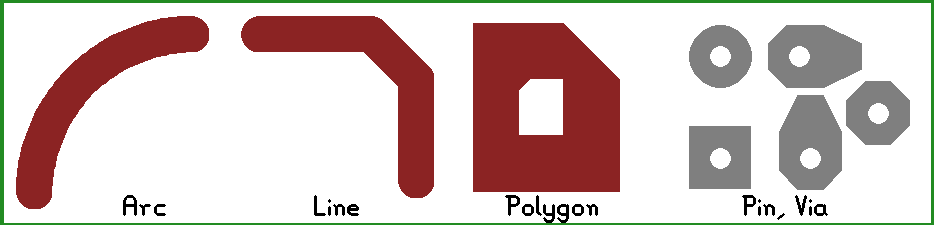
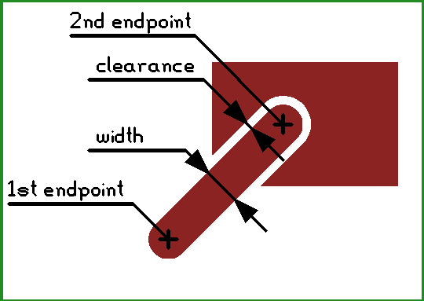
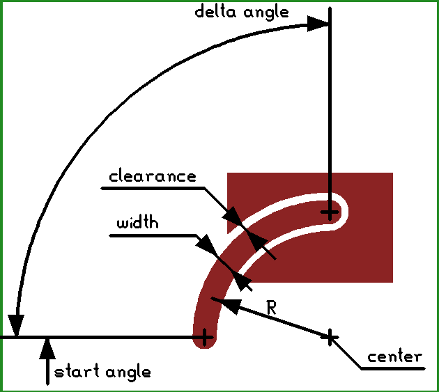
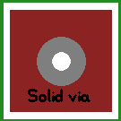
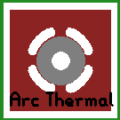
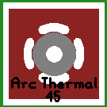
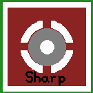
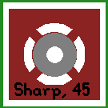

Pcb-rnd is designed to handle the geometric data of a PCB. This section describes how pcb-rnd represents reality (e.g. copper shapes) in memory.
Each design pcb-rnd handles is a board. The board has global properties and hosts layers. Most drawing primitives (objects) are on layers. This section describes the most important global properties.
Board size is given as a width and a height. For rectangular boards this can be the real board size, but more commonly it is used to simply determine the on-screen drawing area and the final board dimensions are specified using boundary layer groups. If the board is not rectangular, the contour must be specified on boundary layers and the board size must be large enough that the outline fits in it.
Netlist is the list of logical connections to be realized in copper. A netlist is a list of named nets. Each net consists of a list of terminals (pins or pads) to connect. A terminal is given as refdes-pinname, e.g. U4-7 means "pin number 7 in subcircuit called U4".
Fonts are always embedded in the design file in order to guarantee that the file can be ported and will look the same on different hosts.
Misc editor settings, such as grid size and offset.
The main use of pcb-rnd is to aide the user in the process of producing real pcbs composed of real physical layers. pcb-rnd also refers to layers to conceptualize this process, but pcb-rnd layers are different than the physical layers.
Unlike a physical layer, a pcb-rnd layer has no thickness. Any pcb-rnd layer is always part of a layer group. It is a 2 dimensional logical canvas, similar to layers in image manipulation software like GIMP. In pcb-rnd there are explicit, virtual or implicit layers. An explicit layer contains drawing primitives (objects) placed by the user. The user has full control over an explicit layer: objects can be added or removed or changed any time. A virtual or implicit layer has no such flexibility: pcb-rnd computes its content from explicit layers and there's no way for the user to change the result directly.
Pcb-rnd currently maintains some layers types as virtual layers for compatibility with the PCB package. In a pcb-rnd board design started from default configuration options, the mask, silk, and paste layers currently start out as virtual layers. The content for these layers is computed by pcb-rnd as for a virtual or explicit layer, until the user decides to use features that require user control over one or more of the layers in the group. At that point, the virtual layer is replaced with an explicit layer group.
For example, in pcb-rnd when using one of the gtk GUIs, if the user right clicks on a solder mask ('mask') layer and choose an option to 'insert new layer before this one', pcb-rnd replaces the virtual mask layer with an explicit mask layer group. The mask layer group can contain one to many pcb-rnd layers each with individual settings to control implicit generation, and additive or subtractive behavior when adding objects to the layers.
One or more explicit layers form a layer group. All pcb-rnd layers of a layer group will end up on the same physical layer. The visibility of layers in a layer group are toggled together. Having more than one layer in a group may be useful to:
Since layer groups donate the physical layers, a board stack-up is built of layer groups. Substrates are layer groups without drawable layers in them. The mask, paste, silk layer groups behave the same and can host zero or more logical layers.
Each layer group has a main type. Main types are:
Each layer group has a location. Locations are:
Not all combination of type and location are supported: e.g. for a boundary layer group the location is always global. The table below lists whether a combination is supported or not.
| top | bottom | intern | global | composite | |
|---|---|---|---|---|---|
| copper | yes | yes | yes | no | no |
| silk | yes | yes | no | no | yes |
| mask | yes | yes | no | no | yes |
| paste | yes | yes | no | no | yes |
| boundary | no | no | no | yes | no |
| mech | yes | yes | yes | yes | maybe |
| doc | yes | yes | yes | yes | maybe |
Note: for some layer types whether compositing is allowed depends on the subtype (purpose).
Each layer group has a purpose field, which functions as a subtype. The value is a free form text for user defined groups, but pcb-rnd recognizes (and handles specially) the following combinations:
| main type | purpose | special meaning |
|---|---|---|
| boundary | uroute | unplated, routed bounary: routed outline of the board |
| boundary | proute | plated, routed bounary: routed outline of the board with copper plating |
| mech | uroute | unplated, routed inner cutout: unplated slots and small inner cutouts, done with drilling or routing or punch-through |
| mech | proute | plated, routed inner cutout: plated slots and small inner cutouts, done with drilling or routing or punch-through (typical for oval/rectanglar pins) |
The following combinations are conventions many footprints and boards would follow:
| main type | purpose | location | special meaning |
|---|---|---|---|
| boundary | cut | (global) | unplated, straight line cuts at board outline |
| boundary | vcut | (global) | unplated, straight line v-cuts (or grooves) at board outline |
| doc | assy | top or bottom | assembly drawing (for populating the board) |
| doc | fab | top | fab instructions (for board fabrication: cuts and drills) |
| doc | ko.courtyard | top or bottom | keepout: component body above (or below) the board surface (polygons) |
| doc | ko@lt | respectively | keepout: nothing shall be drawn on layer type lt that intersects objects on this layer; lt is location-type, e.g. top-copper, bottom-silk, etc. |
| doc | placement | any | placement helpers, e.g. where board edge should be relative to a connector |
| mech | adhesive | top or bottom | adhesive (glue) pattern printed on the board to keep parts in place during reflow |
| mech | finish.gold | top or bottom | gold finish (typical for copper fingers intended for slots/connectors/contacts) |
| mech | finish.carbon | top or bottom | carbon finish (typical for under rubber push buttons) |
Pcb-rnd supports a small number of basic drawing objects, from which complex objects can be build. The following figure demonstrates all basic objects:

Objects have flags that control their behavior. The following flags are common to all objects:
| name | description |
|---|---|
| selected | selected by the user ("cyan") |
| found | found as a galvanic connection in the last connection lookup ("green") |
| warn | offending object e.g. in a short circuit ("orange") |
| lock | locked by the user: can't be selected, moved or changed using the basic mouse/keyboard actions (still can be copied, selected by query() and edited by propedit()) |
Lines are round ended straight line segments with a width and a clearance. The above image shows 3 lines connected. Lines are mainly used to construct traces. A line is always on a specific layer. The user interface allows drawing lines aligned to 90 or 45 degree axes or lines with random angle.
A line is specified by its two endpoints, width and clearance:

A clearance is the gap between a line and the surrounding polygon in the same layer group. The gap is made only if the surrounding polygon has the "clearpoly" flag set and the line has the "clearline" flag set. If either of these flags is not set, no gap is made - or in pcb-rnd terminology, the line is joined to the polygon.
| name | description |
|---|---|
| clearline | clears polygons with the "clearpoly" flag in the same layer group |
Arcs are round ended circular arcs with trace width and clearance. They behave like lines in all respects.

Although the arc is described with its center, radius, start and end angles, the user interface may offer drawing arcs by endpoints.
| name | description |
|---|---|
| clearline | clears polygons with the "clearpoly" flag in the same layer group |
Polygons are solid, filled copper areas with optional holes in them. Polygon contour consists of lines - when they look curvy, its really high resolution line approximation. There are two type of holes in a polygon: explicit, user drawn holes and clearance cutouts. User drawn holes are "negative" polygons drawn manually. To keep polygons simple, if an user drawn hole touches the contour of a polygon, the hole is removed and the contour is modified; if two holes touch, they are merged into one hole.
If the polygon has the "clearpoly" flag set (default), clearance cutouts are automatically inserted around objects on the same layer group:
Overlapping or touching polygons are not automatically merged. An object with the "clearline" flag set will clear all "clearpolys" it is over - if there are multiple such polygons overlapping under the objects (on the same layer group), all such polygons get the clearance cutout.
If a polygon has the "clearpolypoly" flag set, it clears any other polygon that does not have the "clearpolypoly" flag set but has the "clearpoly" set. In other words, a "clearpolypoly" polygon behaves the same as a line/arc that has the "clearline" flag.
If a polygon is cut into multiple islands, the behavior depends on the "fullpoly" flag of the polygon. If it is not set (default), only the largest island is kept, else all islands are kept. In the "fullpoly" mode islands will have no galvanic connection (unless the user adds vias and connect them on another layer), still the program will handle all islands as a single polygon. This is risky: the program will indicate connection between polygon islands that are not really connected, only because they are part of the same polygon!
| name | description |
|---|---|
| clearpoly | should have clearance around objects, if the objects have the appropriate flags too |
| fullpoly | keep all islands, not only the largest |
A text object is string and a series of symbols (pcb-rnd's terminology for glyph). Symbols are built of lines and are stored in the font. Each board can have its own font, but there can be only one font per board. When the string of the text is edited, the object is rendered again so that the new string appears.
Text objects can be placed on copper and silk layers. Text can be rotated only in 90 degree steps. Each text object has a scale parameter that determines its size in percentage. A scale of 100% means symbols are rendered in 1:1 size.
The clearance around text is rendered as a round corner rectangular cutout. Bug: copper text can not participate in short circuits, the galvanic connection checker code skips texts.
A subc (subcircuit) is a group of objects with its own, local layer information. All layers of a subc are bound layers, that is, the user is free to choose on which actual board layer it is placed on. There is no limitation on what layers or objects a subc can contain.
The main uses of subc are:
A subcircuit may be an instance (copy) of a footprint. The subcircuit is placed on the board or loaded into a paste buffer (the footprint lives in the footprint library).
In the footprint form the construct is small and flexible. It describes all the physical parts, like pins, pads, silk lines. In the same time a footprint leaves many details blank, e.g. it doesn't specify exact layers, it doesn't have font and the refdes is random.
When the footprint is loaded, it becomes an subcircuit. The subcircuit inherits all the physical properties and the blank details are filled in with the data taken from the current board: the layer binding is done, all parts of the subcircuit lands on a specific board layer; the refdes is rendered using the font in the current board.
The footprint -> subcircuit instantiation is also a copy. Once the subcircuit is created from a footprint, the subcircuit is a self-containing object and does not have any direct reference to the footprint it was once derived from. Changes to the original footprint will not affect the subcircuits.
In other words, a footprint is an abstract recipe, part of a library, while an subcircuit is a land pattern already embedded in a specific design and describes actual copper and silk.
Currently a subcircuit or footprint can contain any object on any layer that a board can contain. The only notable limitation (that applies to boards too) is that there is no good way to represent plated slotting.
Commonly used subcircuit attributes:
| subcircuit attribute | description |
|---|---|
| name: refdes | unique identifier, e.g. "C42" - pcb-rnd code will use this when present |
| name: value | informal value, e.g. "15 pF" |
| name: footprint | informal footprint description, e.g. "1206" |
If the nonetlist flag is set, the subcircuit is not intended to be part of the netlist
When a subcircuit is a footprint, it normally has the refdes attribute set. Refdes is the name that identifies the part on the netlist. Some objects of a footprint will have the term attribute to turn those object into terminals (representing pins or pads). If multiple objects have the same term attribute value, they are all contributing to the same terminal.
When the terminal object is a single padstack, it is called a light terminal. When the terminal is built using multiple objects, it is called a heavy terminal.
A connection on the netlist is identified as refdes-term, e.g. U5-3 means "the object(s) whose term attribute is 3 within the subcircuit whose refdes attribute is 'U5'".
If the repetitive module is specified as a refdes-named device on the schematics, it is really just a footprint. Else it is a non-footprint subcircuit.
Compared to subcircuits as footprint, a non-footprint subcircuit will not have a refdes attribute and will not have terminals. It will also have the nonetlist flag set.
A subcircuit needs to have an aux layer. The name of this layer is subc-aux, with type VIRTUAL and MISC, and is on top, bottom or intern. It hosts three objects placed when the subc was first created:
These objects specify the neutral state of the subcircuit. If the subcircuit goes through any transformation (rotation, translation/move, mirroring, etc.), these objects are also transformed (just like any other object in the subc). Looking at the current state of these objects and the location flag of the aux layer, the code can work out the net result of all transformations the subc suffered since creation.
A pad stack is a generic pin/pad/via object that may contain any combination of:
| name | remarks |
|---|---|
| top silk | |
| top paste | |
| top mask | the first negative layer is used |
| top copper | |
| intern copper | the same pad will be used on all internal copper groups |
| bottom copper | |
| bottom mask | the first negative layer is used |
| bottom paste | |
| bottom silk |
| name | description |
|---|---|
| fillcircle | x;y offset of the center, diameter |
| line | round or square cap, from x1;y1 to x2;y2 with the specified thickness |
| simple-polygon | a simple polygon has a single outer contour and no holes |
| hshadow | n/a |
Pad shape hshadow is a special construct: when drawing a clearance around the shape, it pretends to be a copy of the hole or slot shape, but it never has any visible (positive) effect on the target layer. Typical use is inner layer clearance around a via that should not have a copper ring on that layer.
The pad stack has an origin, a 0;0 point where it is grabbed. If the pad stack features a hole, the origin is the center point of the hole. Pad shapes are all defined in a way that they do not have to be concentric with the hole or the origin. This allows asymmetric pads.
In case of blind/buried vias, the internal copper layer pads are applied only on layers with hole span. However, this does not apply to top/bottom shapes, those are always explicit. This means it is possible to use a pad stack as a pad-pair of an board edge connector, having a copper pad on the top layer and one on the bottom layer, even without having a (plated) hole in between. The code will assume connection between the pads only if the pad stack has a plated hole.
If the global clearance is set, it overrides the per layer type clearance and the padstack will have the same global clearance on all layer groups on which it has copper objects.
| name | description |
|---|---|
| rectangular smd pad | no hole; square cap line or polygon on top copper, top mask and top paste |
| simple pin or via | plated hole and the same filled circle on all copper layers; if pin, a slightly bigger circle on the mask layers |
| octagon pin or via | plated hole and the same simple polygon (octagon shaped) on all copper layers; if pin, a slightly bigger polygon on the mask layers |
| 'oblong' pin | plated hole, a short round cap line segment on the bottom copper and mask layers, filled circle on all other copper layers and on the top mask layer |
| blind via | plated hole and the same filled circle on internal and top copper layers - nothing on the bottom copper layer |
| power jack with slot | n/a - can not be done with pad stack as the plated slots for the pins can not be represented as plated round holes - use heavy terminals instead |
Pad stack prototypes (templates) are stored only once per pcb_data_t (only once per board for vias or per each subcircuit for terminals). The actual pad stacks placed on the board (or in subcircuit) are called pad stack references. A pad stack reference has its own x;y coordinate (within the board or subcircuit), a rotation angle and a mirror flag. This means if a TQFP chip has 48 pads along 4 sides, in the simplest setup there will be onlt one pad stack prototype and 48 pad stack references using the same prototype with different coordinates and rotations.
Each padstack reference has an optional global clearance; if it is non-zero, this value is used as clearance on all layers for this instance. When it is zero, the prototype's per shape clearance applies, which makes it possible to have different clearance for internal layers, for example.
Each padstack reference has a per board layer list of thermal relief types.
A thermal relief property is added to the copper rings of a via when it is connected to the surrounding polygon of any individual layer. Physical designs may use thermal reliefs to enable easy hand soldering, or reduce occurrence of tombstoning in automated production.
The following thermal relief options are available:
| Thermal Relief | Appearance |
|---|---|
| no connection | |
| solid |  |
| round x 90 |  |
| round x 45 |  |
| crossbar x 90 |  |
| crossbar x 45 |  |
A rat line represents a logical connection that is not yet realized in copper. It requires a loaded netlist for generation, and relies on calculations for any existing copper layers that connect terminals on the pcb-rnd board. Rat connections are straight line connections between the terminals of any two drawing primitives that aren't yet connected
A netlist is a list of named logical networks. Each network is a list of netlist terminals that should be connected. A netlist terminal is a pair of subcircuit-refdes and pin-number (or pad-number). Thus a typical netlist looks like the following:
The netlist assumes subcircuit refdes are unique. If a subcircuit has multiple instances of the same terminal number, the engine picks one randomly and assumes there's an invisible, internal connection within the subcircuit.
Rat lines can be regenerated from the current netlist for missing connections. Connections that are realized in copper but not present on the netlist, pcb-rnd gives a "short circuit" warning. Both happens when the net is "optimized" (upon user request).
The netlist is typically derived from a schematics by external tools (such as gnetlist). The netlist can be imported (updated) any time. This process is called "forward annotation".
It is also possible to make changes to the netlist from within pcb-rnd: terminals can be swapped, subcircuit footprint replaced using back annotation actions. Such actions will keep a list of intended netlist and subcircuit changes, called the netlist patch. Pcb-rnd will keep these changes even if a new version of the netlist is imported. It is possible to export the netlist patch that can be imported in the schematics editor to change the schematics - this process is called "back annotation". A new forward annotation from the schematics editor to pcb-rnd will then cancel the netlist/subcircuit changes as the new netlist import netlist matches the intended (changed) netlist.
The following objects are commonly used in the industry, but have no special implementation in pcb-rnd but are created by using the above objects.
A via is an electrically connected hole that connects copper rings to multiple layers. In pcb-rnd, a via is always implemented using a padstack.
A hole is a special case of a padstack: it has an unplated hole and typically does not have copper pad shapes but should have mask cutout shape.
A test point or test pad is a padstack that has copper shape only on one of the outer copper layer and a mask cutout shape over that layer.
A fiducial mark is a special case of a padstack very similar to the test point/pad.
Holes, test points/pads and fiducials are often realized within a subcircuit , especially if they have a refdes and present on the schematics. However, the only way to implement a hole is using a padstack, so the resulting subcircuit for holes and test pins will always have at least one padstack.
| Physical board | pcb-rnd | Description |
|---|---|---|
| Layer | Layer Group | enables the user to design complex physical constructions |
| Copper layer | Layer group with copper layers | designed with one to many pcb-rnd layers |
| Component/Top copper layer | Layer group with copper layers | any group of copper layers defined as the 'top' of a board |
| Solder/bottom copper layer | Layer group with copper layers | any group of copper layers defined as the 'bottom' of a board |
| Substrate | Layer group marked as substrate, hosting no logical layers | pcb-rnd does not yet handle properties of physical substrate information |
| Contour of the board | Outline layer | designed using standard pcb-rnd objects |
| Outline routing path | Outline layer | designed using standard pcb-rnd objects |
| Polygon pour | Polygon | an object available for design in any layer group |
| Plane | Polygon | see above |
| Mask (solder mask) | Layer group with implicit and potential explicit content | design layers available: automatic, additive, subtractive |
| Silk | Layer group with implicit and potential explicit content | design layers available: automatic, additive, subtractive |
| Paste (paste stencil) | Layer group with implicit and potential explicit content | design layers available: automatic, additive, subtractive |
| N/A, or poss. net/circuit | Rats | assistive layer automatically generated with netlist and copper layer group connection data |
| Via | Padstack | a vertical construction that features a plated hole and copper pads around the hole |
| Pin | Padstack | a special via that is going to host a pin of a through-hole component soldered on the board |
| Pad | Padstack | a copper feature that is going to host a lead of an surface mount component |
| Hole, mounting hole | Padstack | special case of vias, with no plating or copper pads |
| Fiducial mark, test pad | Padstack | special case of pad |
| Element, module, part (on board) | Subcircuit | a placed instance of a library footprint |
| Footprint, land pattern | Footprint | reusable patterns stored in the footprint library |